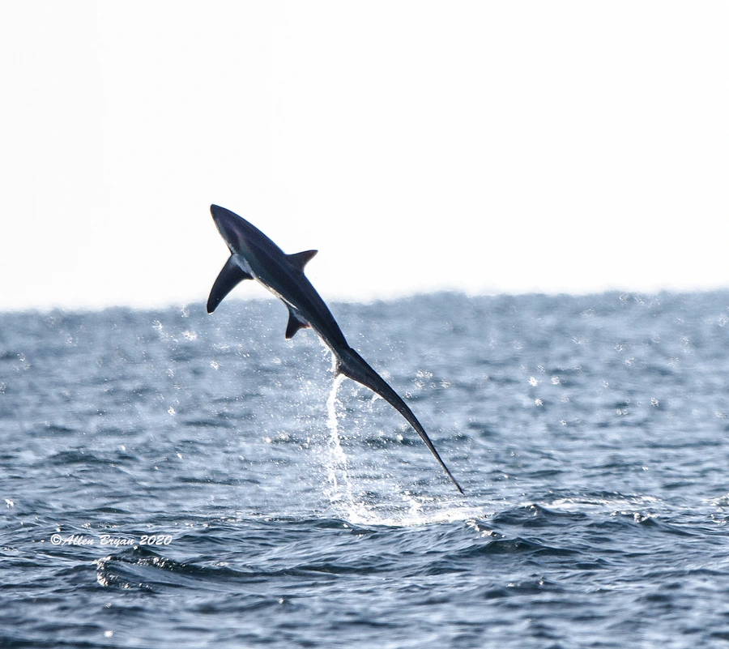

鱼类 · 动物界
长尾鲨 Alopias vulpinus

尾鳍上叶极长、几乎与身体等长的远洋鲨鱼，会用长尾抽打鱼群捕食，因渔业兼捕导致数量持续下降。
- 分类
- 门脊索动物门纲软骨鱼纲目鼠鲨目科长尾鲨科属长尾鲨属
- 栖息环境
- 温带和热带海洋的大洋上层、近岸和外海
- 地理分布
- 全球温带和热带海域，包括太平洋、大西洋和印度洋
- 保护级别
- IUCN 易危（VU）；《濒危野生动植物种国际贸易公约》附录Ⅱ
物种志
长尾鲨体呈粗壮的纺锤形，最显著的特征是尾鳍上叶极度延长，长度几乎与躯干相当，像一条长鞭。体色背部深褐或灰褐，腹部白色，背鳍和胸鳍较大。成鱼体长一般 3–5 m，其中尾部约占一半，体重 200–350 kg。
长尾鲨分布于全球温带和热带海洋，多在大洋上层和近岸水域活动。它常追逐沙丁鱼、鲭鱼等鱼群，先用长尾抽打水面，把鱼群驱赶聚拢，再张口捕食；有时也会跃出水面。长尾鲨为卵胎生，每胎通常 2–4 尾，幼鲨出生时体长约 1.5 m。由于生长缓慢、繁殖率低，加上延绳钓和流网渔业的兼捕，其种群数量下降，IUCN 将其列为易危。
形态与习性
- 食性沙丁鱼、鲭鱼等群游性鱼类及头足类
- 体长一般 3–5 m，尾鳍约占体长一半
- 体重一般 200–350 kg
- 捕食方式用长尾抽打水面，把鱼群驱赶聚拢后捕食
- 繁殖卵胎生，每胎通常 2–4 尾
- 寿命可达 20 年以上
趣味知识
- 长尾鲨的尾鳍上叶几乎与身体等长，是它最醒目的标志。
- 它会用长尾抽打水面，把小鱼群驱赶聚拢后再捕食。
- 长尾鲨的繁殖率很低，每胎通常只有 2–4 尾幼鲨。